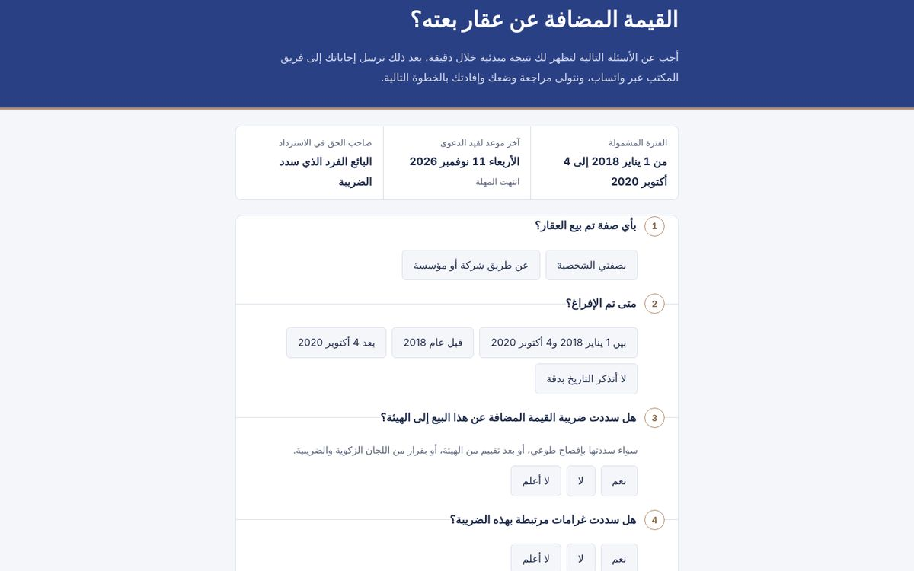

حملة قانونية مع فاحص أهلية
حملة محددة المدة مبنية على تغيير تنظيمي، يبدأ فيها العميل المحتمل بفحص أهليته بنفسه خلال دقيقة.

المشكلة
حين يفتح تغيير تنظيمي بابًا لمطالبة محددة المدة، يتصل كثيرون ليسألوا السؤال نفسه: هل يشملني؟ أغلب هذه المكالمات تنتهي بلا عميل، ووقت المحامي يضيع في الفرز.
كيف يعمل
- يجيب الزائر عن أسئلة قصيرة بلغة بسيطة، دون أي مصطلح قانوني.
- تظهر له نتيجة مبدئية فورًا: مؤهل، أو غير مؤهل، أو يحتاج مراجعة.
- تنتقل إجاباته جاهزة إلى الفريق عبر واتساب، فيبدأ المحامي من حالة مفروزة.
جرّب بنفسك
غيّر إجاباتك في تاريخ البيع وصفة البائع، ولاحظ كيف تتغير النتيجة والخطوة التالية.
النسخة المعروضة قالب عام. اسم الجهة ورقم التواصل محذوفان.